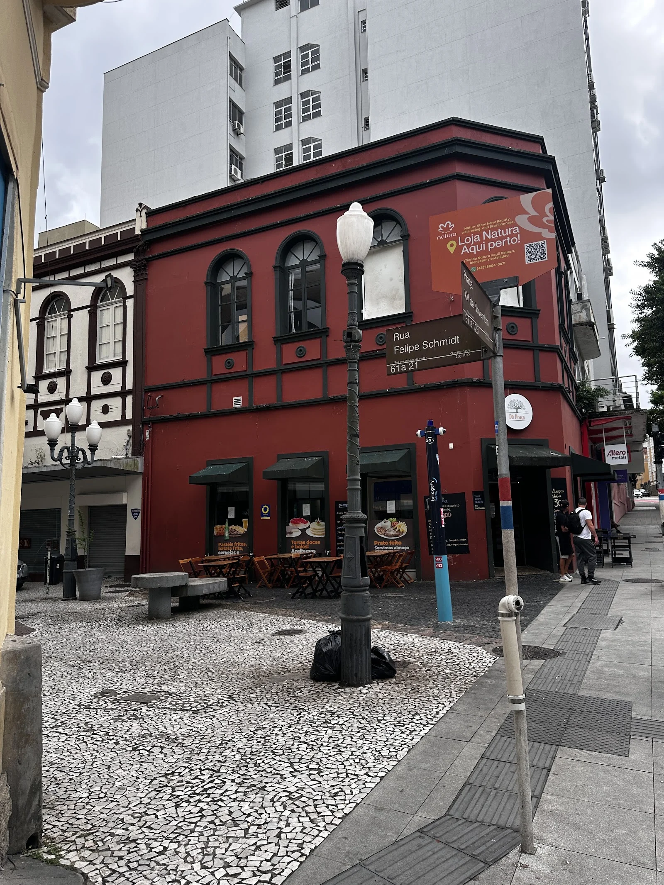
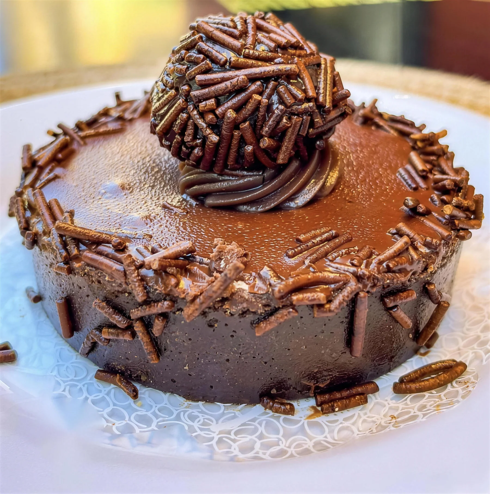
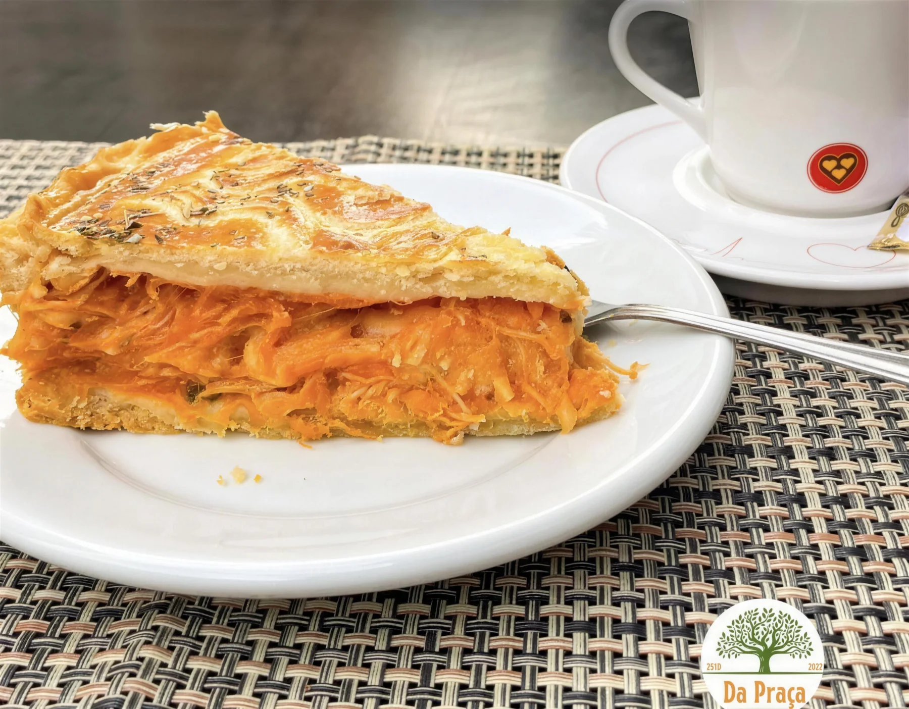
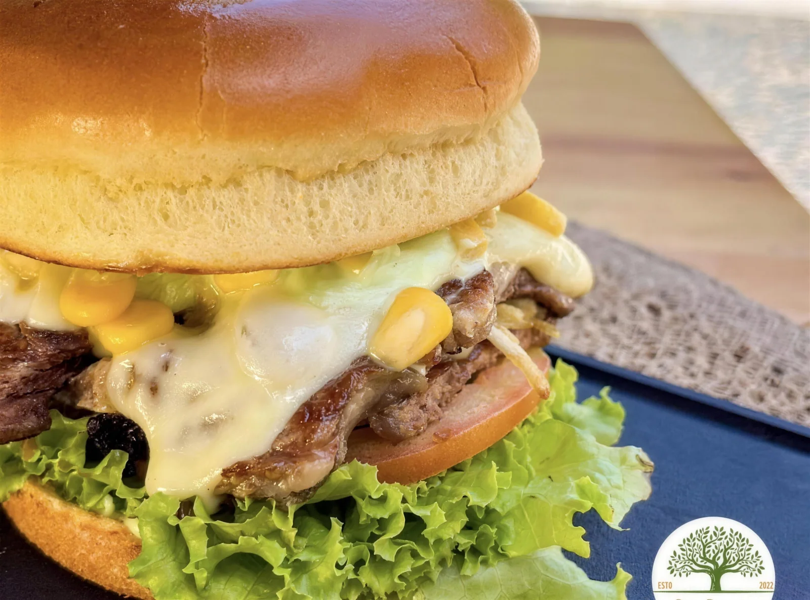
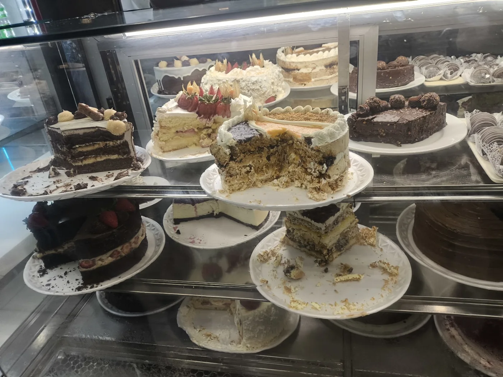
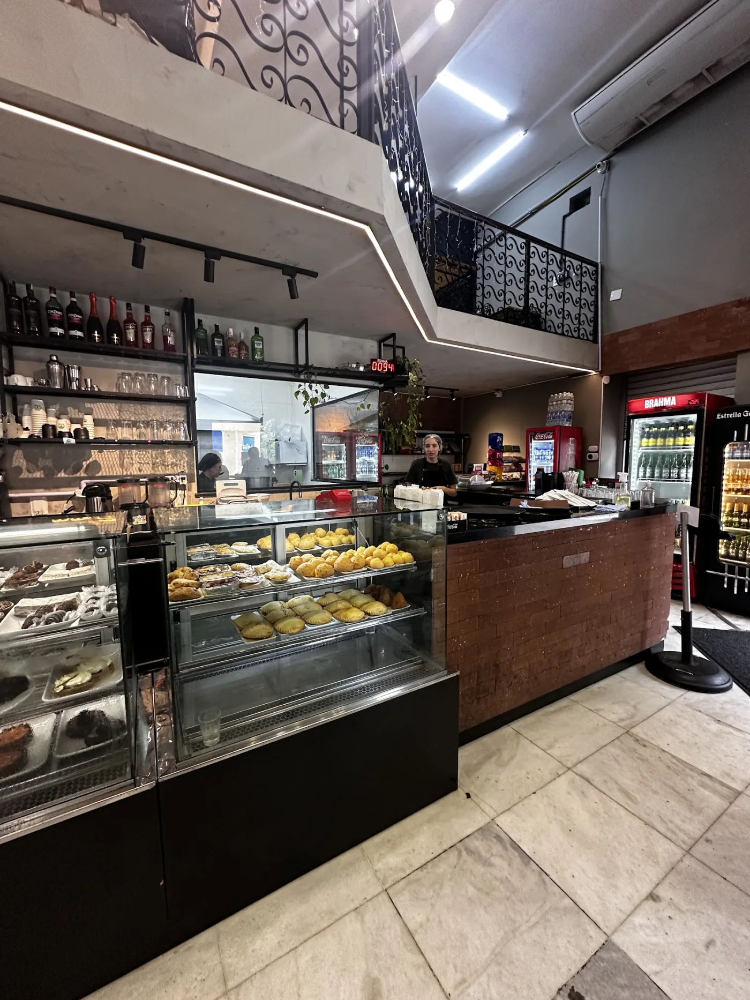

Praça XV · Centro de Florianópolis · desde 2022
Da Praça
Café, almoço e jantar no casarão vermelho da Felipe Schmidt, de frente pra praça.
Na vitrine
Doce, salgado e café quente.
Bolo de brigadeiro, torta de frango, hambúrguer e a vitrine de bolos e tortas. Fotos do Instagram da casa.

@dapracafloripa
@dapracafloripa
@dapracafloripa
Google Maps · João MoutinhoO dia inteiro
Do café da manhã ao jantar.
Café, pão de queijo e o mocha da casa.
Pratos do dia e opções vegetarianas.
Bolos, tortas e salgados da vitrine.
De segunda a sexta. Sábado até 19h.
9h às 17h
"Abre nos domingos de manhã e é um dos únicos lugares abertos. A comida é boa. Preço justo. Suco natural."Denise D. · avaliação no Google
A casa
Um casarão de frente pra praça.

Felipe Schmidt, 14
Térreo com balcão e vitrine, mezanino em cima e mesas na calçada de pedra portuguesa, olhando a Praça XV e a figueira.
Do café com pressa antes do trabalho ao jantar sem hora pra acabar. Porções generosas e preço justo, como dizem as avaliações.
Abrir no Google MapsComida maravilhosa, funcionários amigáveis e serviço muito bom! Sem espera para mesas e a comida chegou rápido!
Beatriz P. · Google
Ótimo custo benefício. Porções generosas, preço bom. Opções de refeições e bebidas desde café da manhã, almoço, jantar.
Simoni P. · Google
Muito bom, me surpreendeu a qualidade, o atendimento impecável, o lanche estava ótimo, valor justo.
Gustavo P. · Google
Reservas
Guarde sua mesa na praça.
Escolha o dia e o horário. A mensagem chega pronta no WhatsApp da casa, e a confirmação é feita por lá.
Endereço
R. Felipe Schmidt, 14 · Centro, Florianópolis
Horário
- Seg a sex · 8h30 às 21h
- Sábado · 8h30 às 19h
- Domingo · 9h às 17h
(48) 99129-0222